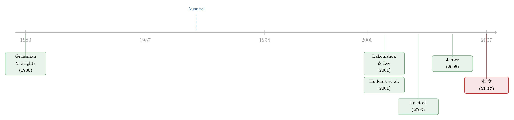

藏在年报截止日前的那笔卖单：当「延迟披露」成了内幕交易的合法通道
本文读的是 Cheng, Nagar & Rajan (2007, Review of Financial Studies)：在 SOX 之前，高管的某些「私下交易」可以拖到财年结束后才在 Form 5 上披露。作者发现，大公司高管以这种延迟方式申报的卖出，能预测未来 -6 到 -8% 的负向股票收益，也能预测低于分析师预期的次年盈利——这恰恰与「大公司内幕卖出不含信息」的既有共识相反，并为 SOX 收紧 Form 5 提供了系统性证据。
1 一个被反复证伪的直觉
先说一个让人有点别扭的「学界共识」。
按朴素的直觉，公司高管比任何外人都更清楚自己公司接下来会怎样。所以当 CEO、CFO 们卖出自家股票时，市场理应紧张——他们是不是知道了什么坏消息？然而，过去二十多年的实证文献却一次又一次地告诉我们：对大公司而言，高管的卖出基本不含信息。Lakonishok 和 Lee（2001）翻遍了数据，结论是内幕交易能预测收益的能力「主要局限在小公司的买入交易上」；Jeng、Metrick 和 Zeckhauser（2003）、Jenter（2005）也都发现，内幕卖出对未来公司业绩没什么预测力。Lakonishok 和 Lee 给出的解释很合乎逻辑：大公司高管的薪酬里塞满了股票和期权，他们卖股票，多半只是为了流动性和分散风险，而不是在「抢跑」坏消息。
这个解释听起来天衣无缝。但 Cheng、Nagar 和 Rajan 在这篇文章里盯住了它的一个软肋。
软肋来自 Ausubel（1990）的一句理论提醒：当一个人同时怀着「流动性」和「私有信息」两种动机交易时，你很难单纯从价格和成交量里把这两种动机拆开。也就是说，「大公司内幕卖出不含信息」这个结论，未必是因为高管真的没在用信息——也可能只是因为，在标准的、快速披露的交易里，信息动机被流动性动机的噪声给淹没了，我们没看见，不代表它不存在。
那么，有没有一类交易，能把「信息动机」从「流动性动机」里干净地分离出来？
2 关键的制度缝隙：Form 4 与 Form 5
答案藏在一个极其具体的披露制度细节里。这也是全文最关键的一步。
在 2002 年萨班斯—奥克斯利法案（Sarbanes-Oxley Act, SOX）以及随后 SEC 规则修订之前，美国高管的内幕交易披露分成两条通道：
- Form 4（快速披露）：公开市场上的卖出，必须在交易发生后、次月的第 10 天之前报给 SEC。几乎是「准实时」的。
- Form 5（延迟披露）：某些类型的、非公开市场的私下交易——比如高管把股票直接卖回给公司——可以豁免快速披露，最晚在财年结束后 45 天内才申报。
这中间的时间差有多夸张？正文里举的几个例子触目惊心。安然前董事长 Ken Lay 在 2001 年公开宣称公司前景一片光明，同时却通过 Form 5 卖掉了 $70M 的安然股票——这些从 2001 年 2 月就开始、贯穿全年的卖出，直到 2002 年 2 月 14 日才申报。泰科（Tyco）的 Kozlowski 和 Swartz 把价值 $109M 的股票卖回给公司，把披露整整推迟了 385 天。高露洁的高管 William Shanahan 在 2000 年 7 月卖掉 $25.2M 股票，滞后 198 天才在 Form 5 上披露。
这里的精妙之处在于：Form-5 交易在交易发生时是「秘密」的，市场要等到财年结束后的那一次集中申报，才第一次知道高管早就卖了。这恰好制造了一个天然的事件——「交易日」与「披露日」被人为地拉开了几个月。
于是问题就被重新定义了。如果高管只是出于流动性需求卖股票，他完全可以选择快速、透明的 Form 4——延迟披露对他没有任何好处。反过来，一个高管之所以特意选择延迟披露的通道，本身就是一个「显示偏好」（revealed preference）的信号：他可能正是想趁着自己手握私有信息、而市场尚不知情的窗口期，先把股票出掉。私下交易 + 延迟披露，把信息动机从一堆流动性噪声里筛了出来。
这就是这篇文章的核心抓手。下面所有的检验，都是围绕这一个核心展开的「显示偏好」证据链。
3 数据：被 SOX 终结的那四年
作者把样本锁定在 S&P 500 大公司，1998–2001 财年，数据拼自多个标准库：内幕交易来自 WRDS 里的 Thomson Financial，分析师预测来自 I/B/E/S，财务数据来自 COMPUSTAT，股票收益来自 CRSP，机构持股来自 Thomson Financial，董事的股权激励来自 ExecuComp。最终样本是 445 家公司、约 1,457 个公司—年、覆盖 50 个两位数 SIC 行业。高管的范围限定在「信息金字塔」顶端的五个头衔：CEO、COO、CAO、CFO 和总裁。
为什么偏偏是这四年？两头都被制度卡死了。
一头是 Form 5 的崛起。1990–1997 这八年，样本公司的 Form-5 卖出总额只有 $145M；而 1998–2001 这四年，这个数字暴涨到 $474M——经期限调整后增长了 654%。Jensen（2004）的「高估股权的代理成本」给了一个时代注脚：90 年代末股价高企，高管薪酬里股票期权激增，被高估的股权会放大代理问题，而 Form 5 这种新通道恰好在此时变得格外诱人。
另一头是 SOX 的终结。2002 年法案通过后，SEC 大幅收紧规则：高管与公司之间的交易（Rule 16b-3）从 Form 5 挪回了 Form 4，Form 4 本身也改成必须 2 天内电子申报。结果立竿见影——Form-5 卖出在 2002 年骤降了 90%。
样本里约 24% 的公司—年存在非零的 Form-5 卖出，这些交易年均 $2.4M（中位数 $326K）。单看金额，比 Form-4 卖出的 $33M 小得多；但别忘了笔数也少——Form-4 卖出平均每个公司—年有 8.45 笔，Form-5 只有 1.24 笔。摊到每一笔上，两者其实相当。而且，作者特意提醒：样本里这些大公司的 Form-5 卖出，占了整个内幕交易库里 Form-5 卖出总额的约 89%——他们盯住的，正是这门生意的主体。
一个值得警惕的细节：Form-5 交易分成「员工福利计划相关」「高管与公司间交易」「真实赠与」等好几类（见正文 Table 1 的 Panel E）。但作者明确指出，不能从交易被归入的类别去推断其意图——一个机会主义的高管完全可以把交易报进一个「看起来人畜无害」的类别里。比如通过慈善基金会进行的「赠与」就被广泛滥用。所以主分析里，作者不区分类别，把所有 Form-5 卖出一锅端。
4 三组「显示偏好」检验
由于无法直接观测高管的私有信息，作者只能用一连串「显示偏好」式的检验来逼近它：收益检验、盈利检验、治理检验。我们一组一组看。
4.1 收益：秘密不值钱，曝光才值钱
第一组是事件收益检验，而它的设计本身就藏着这篇文章最漂亮的逻辑。
作者把「交易日」和「披露日」分开来看。
先看交易日。 投资者在高管 Form-5 卖出发生时并不知情。作者用 Mitchell 和 Stafford（2000）的日历组合（calendar portfolio）方法，考察交易执行之后若干天的异常收益。结果是：几乎没有任何显著的异常波动（整张表里只有一个收益显著）。换句话说，这些交易并不是踩着某条即将公开的重大消息的点儿做的——高管并没有在用「短期」的私有信息抢跑。
再看披露日。 一旦财年结束、Form-5 卖出被集中申报，故事就完全不同了。对一个财年里第一次 Form-5 卖出申报的平均市场反应是 -6 到 -7%，显著，并且在随后几个短窗口里持续。而对买入的申报，几乎没有反应。
作者特意只保留每个财年的「第一次」申报。原因有二：一是同一家公司多次申报会有几乎相同的收益、从而虚高 t 值；二是在合理的信号假设下，理性投资者本就该对第一次申报做出反应。这是个干净的处理。
把这两半拼起来，结论就呼之欲出了：Form-5 卖出是一个秘密，它只在被曝光的那一刻才产生收益。 信息一直在那里，只是被高管藏到了财年末的集中申报里。市场不是没反应，而是被延迟披露蒙住了眼睛，直到揭盅那一刻才反应过来——而且长期事件收益显示，市场这一反应大体上既没明显过度、也没明显不足，定价基本到位。
作为对照，作者同时检验了快速披露的 Form-4 卖出，发现它几乎没有预测未来收益的能力——这与 Lakonishok-Lee 那一脉的既有结论完全一致。同一批高管、同样是卖出，仅仅因为披露通道不同，信息含量就天差地别。这个对照，是全文最有说服力的一笔。
（关于「披露通道本身如何泄露信息」这条线，本博客另有几篇可对照：高管藏在申报门槛之下的交易，见《雷达之下：不必申报的高管，在自家股票上赚了多少？》；而「提前安排好的交易计划是否就等于清白」，见《「提前安排好」就等于「没用内幕消息」吗？——拆开 Rule 10b5-1 的三道后门》。）
4.2 盈利：他们到底在卖什么消息？
但市场到底在反应什么？这是一个自然的追问。高管在卖出时手里握着的、市场只能在申报时才推断出来的，究竟是什么信息？
作者直接给了一个答案：未来的利润。高管贴近经营一线，对客户订单趋势、供应商交货周期这类影响未来盈利的「公司特定」信息，往往能更早地私下知晓。于是作者去检验：Form-5 交易能否在「当年已公开的信息之外」，额外解释未来的盈利？
这里的识别要点，是控制住「当前公开信息对未来盈利的预测」这一块。作者用的代理变量很巧妙——当年最后一次、分析师对次年 EPS 的中位数预测 EPSF_{i,t+1}。概念上的回归形如：
$$ EPS_{i,t+1} = \alpha + \beta\, F5SYES_{i,t} + \gamma\, EPSF_{i,t+1} + \text{controls} + \varepsilon_{i,t+1} $$
其中 F5SYES_{i,t} 是「该公司—年是否存在高管 Form-5 卖出」的哑变量，EPSF_{i,t+1} 是分析师对次年 EPS 的中位数预测。如果在控制住分析师预期之后，β 仍然显著为负，那就说明：Form-5 卖出里含有连分析师都还不知道的、关于未来盈利的私有信息。
结果正是如此。某个公司—年出现 Form-5 卖出，与次年 EPS 下降 4 到 9 美分相关联（样本平均 EPS 是 $1.40）。也就是说，分析师在当年并没有把这部分坏消息计入预期，他们只在 Form-5 卖出被披露时才推断出来。更进一步，作者还做了一个「三角对账」：初始的市场反应幅度，与随后实际发生的 EPS 下降，在量级上平均能对得上——市场对这个秘密的定价，是准确的。
这一步把因果链补完整了：高管私有信息 → 选择延迟披露通道卖出 → 市场在申报时才推断出坏消息 → 股价下跌 + 次年盈利不及预期。
4.3 动机与治理：他们图什么，又被什么管住
私有信息是机会主义交易的必要条件，但不是充分条件。高管还要权衡其他成本和收益。作者于是去直接度量两项 Form-5 交易带给高管的好处：
- 第一，融资。 当年在 Form 5 上卖股票的高管，从投资者那里募到了更多的外部融资。这个逻辑很硬——如果交易对手知道高管正预见到坏消息、正在抛售自己的个人持股，那这些融资活动会昂贵得多。延迟披露替高管把这层窗户纸糊住了。
- 第二，薪酬。 更多使用 Form 5 的高管，从薪酬委员会那里拿到了超出公司业绩应得水平的报酬。脚注里那个安然的例子很说明问题：参议院调查报告指出，安然的薪酬委员会对管理层的 Form-5 交易完全不知情，只能用公开信息去评价高管业绩。
最后是治理检验，思路借自 Bertrand 和 Mullainathan（2001）的一个经典招法：要判断一个实证结果是不是反映了高管的机会主义，就看它在治理良好的公司里是不是更弱。 鉴于 Form-5 交易的私密性质，这个方法对本文格外贴切。作者用了两个治理代理：机构大股东（institutional blockholders，依 Shleifer & Vishny 1997）的存在，以及拥有明确股权激励的外部董事（依 Yermack 2004）。结果是：在这类公司里，Form-5 卖出与未来盈利、未来收益的负向关联都被削弱了（不过对机构大股东那一项，统计显著性是边际的）。治理，确实能在一定程度上压制 Form-5 卖出里的机会主义。
把三组检验连起来读，这篇文章其实在讲同一件事的三个侧面：高管利用延迟披露的制度缝隙，在私有信息曝光之前完成卖出，并借此在融资和薪酬两端获利；而良好的治理能部分地堵上这条缝。SOX 当年收紧 Form 5，正是基于「高管在机会主义地使用这一通道」的推定——作者说，我们的系统性证据，支持了这个推定。
5 文献脉络
把这篇文章放回它所在的那条线里，它的位置就更清楚了。
源头是两个看似无关、却在这里被焊接到一起的理论传统。一支是 Grossman 和 Stiglitz（1980）开启的信息与市场效率讨论，以及后来 Huddart、Hughes 和 Levine（2001）、Mendelson 和 Tunca（2004）把披露制度明确点为「内幕交易者在多大程度上利用私有信息」的关键变量——正是这一支，提示了「披露要求的差异可以用来分离动机」。另一支是 Ausubel（1990）的理论警告：从价格和成交量里很难拆开多重动机。

接着是实证内幕交易这一脉，它构成了本文要挑战的「既有共识」：Seyhun（1992, 1998）、Lakonishok 和 Lee（2001）、Carpenter 和 Remers（2001）、Jeng 等（2003）、Jenter（2005）——这些工作反复得出「大公司内幕卖出不含信息」的结论。与本文最近的，是 Ke、Huddart 和 Petroni（2003），他们也在问「高管究竟知道多少关于未来盈利的事、又如何利用它」。
而本文真正的「关键一步」，是把这两支拧到一起：用 Form 4 / Form 5 的披露通道差异当作分离器，去检验同一批被前人判定为「不含信息」的大公司高管卖出——结果发现，只要换成延迟披露的那一类，信息就显形了。治理检验则借了 Bertrand 和 Mullainathan（2001）的招法，把结论钉得更牢。可以说，这篇文章既是对 Lakonishok-Lee 共识的一次精巧的「局部翻案」，也是对一项即将落地的监管（SOX 对 Form 5 的收紧）的一次同期实证背书。
（这条「私有信息何时、通过何种通道泄露进价格」的脉络，至今仍很活跃。关于机构投资者在消息公开前就「站好了队」，可参见《财报还没发，机构已经站好了队——一份非公开成交簿里的「知情」证据》。）
6 评论与延伸（Q&A + 研究方向）
(a) 几个可能的疑问
Q：金额这么小（年均 $2.4M），高管真会为这点钱去搞机会主义吗？
作者在脚注里坦承这是个开放的实证问题，但给了几个旁证：Richard Strong 的非法内幕交易只值
$600K，相对他$800M的净值微不足道；Martha Stewart 惹上官司，起因不过是一笔帮她避免$45,673损失的卖出。经验上，高管为相对小的金额而机会主义行事并不罕见。
Q：会不会是反过来——公司前景变差导致高管卖股票，而不是高管「先知先觉」？
这正是「交易日 vs 披露日」设计要回答的。交易日附近没有显著异常收益，说明高管不是在踩重大消息的点；收益集中在披露日，且与随后实际 EPS 下降量级对得上。更关键的是，盈利检验控制了分析师当年对次年的预测——若只是公开可见的前景恶化，分析师本该已经计入。结果显示 Form-5 卖出在分析师预期之外仍能预测盈利下降，指向的是私有信息。
Q：为什么 Form-4 卖出不含信息，Form-5 卖出却含？同样是高管卖出。
因为披露通道是高管自己选的。选择延迟、私密的 Form 5，本身就是一种显示偏好：只有当他想趁信息未公开的窗口出货时，延迟披露才有价值。流动性需求驱动的卖出没理由放弃透明快速的 Form 4。通道的选择，替我们筛掉了流动性噪声。
Q：既然交易日附近没有异常收益，是不是说明这个检验「证伪」了内幕交易？
不。作者区分了「短期」和「较长期」的私有信息。交易日无反应，只说明高管不是在抢跑某条即将发布的短期消息；他们交易所依据的，是关于未来一整年盈利的较慢释放的信息。Loughran 和 Ritter（2000）也提醒，这类交易日检验本身功效（power）偏低，不宜过度解读其「不显著」。
Q：交易日的「不显著」会不会只是高管谎报了交易日期？
作者明确提到了这个可能——类似期权回填日期（backdating），高管也可能误报交易日。但本文的核心证据建立在申报日上，而申报日是由 SEC 记录的，不存在这个问题。所以结论不依赖交易日的准确性。
Q：这篇文章对 SOX 的政策含义到底是什么？SOX 之后样本都没了，结论还有用吗？
作者的回应有两层。其一，SOX 是基于一系列对公司行为的「推定」立法的，本文正是对其中一条推定做了系统检验，而 GAO 也曾要求过这类系统性经验证据。其二，法律并非一成不变，行政与立法两端都有声音认为 SOX 的相关条款需要重新审视——只要私下交易与延迟披露的问题还会再来，这项研究就不过时。
(b) 几个可能的研究问题与提案
1. 把「延迟披露」搬到公司债 / 信用市场里去问。
【经济故事】股票市场的内幕交易披露规则被研究得很透，但信用市场（公司债、CDS）里的「知情交易」披露要求更松、更不透明。如果某类机构持有人能延迟暴露其在信用衍生品上的头寸调整，是否同样会在坏消息曝光前完成「出货」？机制与本文同源：延迟披露 = 信息动机的筛选器。 【可行性】中。需要 TRACE 的债券成交数据、DTCC 的 CDS 头寸数据，识别上可借鉴本文「交易日 vs 披露日」的事件设计。难点在于信用市场没有 Form 5 这样干净的制度断点，需另找延迟披露的制度缝隙。
2. 外资持有人是否系统性地「晚于」内资知情？
【经济故事】本文揭示的是「谁先知道、谁后知道」的信息时序。把视角换到跨境：外资机构在持有美国公司股票/债券时，是否因信息劣势而总是更晚反应于高管的私下卖出？反过来，本土机构是否能更快读懂 Form-5 申报？这关系到「外资是不是更弱的知情方」这一争论。 【可行性】中—高。可用 13F 与 Thomson 的机构持股，按外资/内资分组，考察 Form-5 申报后两类机构的交易反应时滞。识别清楚、数据现成，doable。
3. SOX 收紧 Form 5 之后，机会主义「漏」到哪里去了？
【经济故事】本文显示 SOX 后 Form-5 卖出骤降 90%。但机会主义未必消失，可能只是换了通道——比如转向 10b5-1 计划、或转向申报门槛之下的小额交易（本博客已有相关文章）。这是一个典型的「监管打地鼠」问题。 【可行性】高。SOX 提供了清晰的时间断点，可做 2002 年前后的双重差分（difference-in-differences, DiD），把 Form-5 使用者作为处理组，追踪他们的卖出行为迁移到了哪类通道。
4. 治理「削弱」机会主义的渠道，到底是监督还是事后曝光？
【经济故事】本文发现良好治理削弱了 Form-5 卖出的信息含量，但「为什么」尚未拆开：是机构大股东/外部董事事前阻止了交易，还是事后更快地把信息逼出来？两者的政策含义完全不同。 【可行性】中。需要细到交易层面的时间戳，结合董事会构成与机构持股的横截面变化，识别治理是作用在交易决策还是信息释放上。难点是治理变量的内生性，可能需要找外生的治理冲击。
7 我的判断
这是一篇「设计大于体量」的文章。样本只有四年、445 家公司，金额也不算惊人，但它胜在那个干净到几乎无可挑剔的识别核心：用高管自选的披露通道，把信息动机从流动性动机里筛出来。Form-4 与 Form-5 的对照、交易日与披露日的对照，两组对照像两把剪刀，把「大公司内幕卖出不含信息」这个看似牢固的共识剪开了一道口子。盈利检验里「控制分析师预期后仍显著」与「市场反应幅度和实际 EPS 下降量级三角对账」这两步，更是把因果链补得相当结实。
对识别的担忧，我有两点。其一是选择问题没有被完全内生化：高管选择 Form 5 这件事本身是内生的，作者把它当作显示偏好来用，逻辑自洽，但严格说来，我们观察到的是「选择了延迟披露的高管」这个被筛选过的样本，其信息含量未必能外推到全体高管——这更像是一个「上界」证据。其二是治理结果的脆弱：机构大股东那一项的显著性是边际的，样本又小，这部分结论我会读得保守一些。
后续我最想看到的，是把这套「披露通道即筛选器」的思路移植到信用市场和跨境持有人上去（见上面的研究提案）。本文最持久的贡献，或许不在它对 Form 5 的具体发现——毕竟 SOX 已经把 Form 5 这扇门关上了——而在它示范了一种方法论：当你无法直接观测动机时，去找一个由制度造成的、交易者自选的披露差异，让选择本身替你说话。 这套思路，在任何披露规则尚不完善的市场里，都还有大把用武之地。
参考文献
Ausubel, L. (1990). Insider Trading in a Rational Expectations Economy. American Economic Review 80, 1022–1041.
Bertrand, M., & Mullainathan, S. (2001). Are CEOs Rewarded for Luck? The Ones Without Principals Are. Quarterly Journal of Economics 116, 901–932.
Carpenter, J., & Remers, B. (2001). Executive Stock Options Exercises and Insider Information. Journal of Business 74, 513–534.
Cheng, S., Nagar, V., & Rajan, M. V. (2007). Insider Trades and Private Information: The Special Case of Delayed-Disclosure Trades. Review of Financial Studies 20(6), 1833–1864.
Grossman, S., & Stiglitz, J. (1980). On the Impossibility of Informationally Efficient Markets. American Economic Review 70, 393–408.
Huddart, S., Hughes, J., & Levine, C. (2001). Public Disclosure and Dissimulation of Insider Trades. Econometrica 69, 665–681.
Jeng, L., Metrick, A., & Zeckhauser, R. (2003). Estimating the Returns to Insider Trading: A Performance-Evaluation Perspective. Review of Economics and Statistics 85, 453–471.
Jenter, D. (2005). Market Timing and Managerial Portfolio Decisions. Journal of Finance 60, 1903–1949.
Ke, B., Huddart, S., & Petroni, K. (2003). What Insiders Know about Future Earnings and How They Use It: Evidence from Insider Trades. Journal of Accounting & Economics 35, 315–346.
Lakonishok, J., & Lee, I. (2001). Are Insider Trades Informative? Review of Financial Studies 14, 79–111.
Loughran, T., & Ritter, J. (2000). Uniformly Least Powerful Tests of Market Efficiency. Journal of Financial Economics 55, 361–389.
Mendelson, H., & Tunca, T. (2004). Strategic Trading, Liquidity, and Information Acquisition. Review of Financial Studies 17, 295–337.
Mitchell, M., & Stafford, E. (2000). Managerial Decisions and Long-Term Stock Price Performance. Journal of Business 73, 287–329.
Shleifer, A., & Vishny, R. (1997). A Survey of Corporate Governance. Journal of Finance 52, 737–783.
Yermack, D. (2004). Remuneration, Retention, and Reputation Incentives for Outside Directors. Journal of Finance 59, 2281–2308.